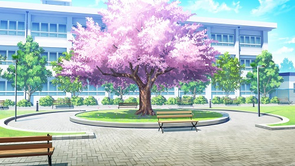

Some super popular trends in today's internet culture includes Japanese visual novels and other virtual simulator games that allow you to make the choices you want in a fictional adventure of your own. I was inspired by a lot of these story games because not only do you get to pave your own path, but lots of the work goes into creating the backgrounds and characters -- the art of the story -- as well. This is what one would call "interactive art".
Click below to make a new friend!
